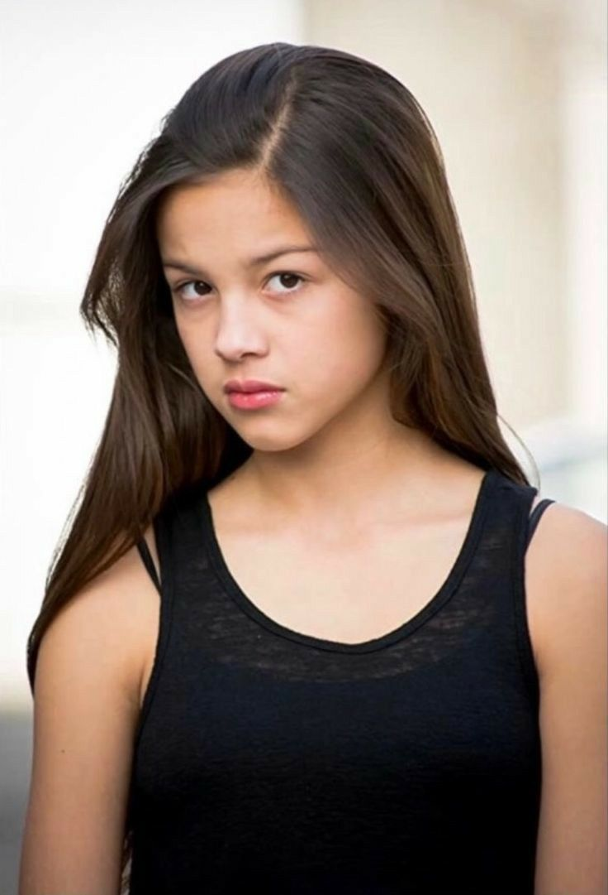

Sus primeros años
Olivia Rodrigo es una cantante, compositora y actriz estadounidense que se convirtió en una de las artistas jóvenes más reconocidas de la música pop. Nació el 20 de febrero de 2003 en Murrieta, California, Estados Unidos. Desde niña se interesó por las actividades artísticas y comenzó a desarrollar habilidades relacionadas con la actuación, el canto y la interpretación. Su primera gran oportunidad profesional llegó a través de la televisión. Uno de sus primeros trabajos conocidos fue Bizaardvark, una serie de Disney Channel en la que participó durante varias temporadas. Más adelante consiguió el papel de Nini Salazar-Roberts en High School Musical: The Musical: The Series. Esta producción fue especialmente importante para su desarrollo porque le permitió combinar dos de sus intereses: actuar y cantar.

La actuación como primer camino
Durante su etapa como actriz, Olivia aprendió muchas de las habilidades que posteriormente utilizaría en su carrera musical. Trabajar frente a cámaras le permitió familiarizarse con los escenarios, las grabaciones, los ensayos y las presentaciones. Su participación en High School Musical: The Musical: The Series también fue importante porque interpretó diferentes canciones dentro de la serie. Esto le dio la posibilidad de mostrar su voz y comenzar a llamar la atención por sus capacidades musicales. Sin embargo, Olivia no quería limitarse a interpretar canciones escritas por otras personas. Poco a poco comenzó a interesarse cada vez más por la composición.
El desarrollo como compositora
La composición terminó convirtiéndose en una parte fundamental de su identidad artística. En sus canciones comenzó a utilizar experiencias y sentimientos propios como punto de partida para crear historias. En esta etapa conoció y comenzó a trabajar con Daniel Nigro, productor y compositor que se convirtió en uno de sus principales colaboradores. La relación creativa entre ambos fue fundamental para definir el sonido de los primeros proyectos de Olivia. Su método de trabajo se caracterizó por darle mucha importancia a las letras. En lugar de crear solamente canciones pensadas para ser pegadizas, buscó que cada una tuviera una historia o una emoción detrás.
El comienzo de una nueva etapa
A finales de 2020 y principios de 2021, Olivia comenzó a prepararse para lanzar música como solista. La expectativa aumentó cuando anunció su primera canción. El 8 de enero de 2021 lanzó “drivers license”. La reacción fue mucho mayor de lo esperado. La canción rápidamente comenzó a acumular reproducciones y llegó a las principales listas musicales internacionales. Su éxito convirtió a Olivia en una de las artistas nuevas más comentadas del momento. Lo importante fue que el éxito no quedó limitado a una canción. Poco después llegó su primer álbum, SOUR, que confirmó que Olivia podía construir un proyecto musical completo.
Una carrera que siguió creciendo
A diferencia de muchos artistas que comienzan publicando música durante años antes de alcanzar reconocimiento mundial, Olivia consiguió una enorme atención prácticamente desde su primer lanzamiento. Esto significó que tuvo que adaptarse rápidamente a una nueva situación. Pasó de trabajar principalmente como actriz a realizar entrevistas, grabaciones, sesiones de fotos, presentaciones y posteriormente conciertos. Su crecimiento también ocurrió mientras ella misma atravesaba una etapa importante de su vida. Por eso, sus primeros proyectos están muy relacionados con el paso de la adolescencia hacia la adultez.